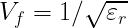
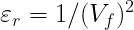

Contents
Enter the Frequency, Cable Length, εr, or Velocity Factor into the upper dialog area. The remaining parameters will be immediately recalculated.
As a convenience, you can restore the display to your favorite Preset values or Reset the values to factory default.
Preset will restore the displayed values to the custom set of values that you have
stored using Save as Preset.
Save as Preset will save all of the current settings as the Preset state. These saved values will be set when the app starts up and whenever you select Preset.
Reset to Initial Values will all of the values to the original app default settings.
This app provides a table of useful characteristics for a given signal
traveling a given length, on a cable or medium of a given velocity factor. The signal can be any type: optical, radio wave, audio, with the primary difference being the speed at which the wave propagates.
This app is primarily exploring the following equation:

which states that Frequency times Wavelength equals the Velocity. In free space, the velocity of electomagnetic signals is the speed of light. For sound waves, the velocity is the speed of sound. The actual speed of any signal will depend on the medium in which it propagates. The Wavelength represents the distance in the medium that one cycle occupies.
The signal characteristics you can enter are:
- Frequency
The rate at which the waveform of the signal repeats, in fundamental units of hertz (Hz), which is equivalent to cycles per second. The suffix button for frequency provides a set of convenient multipliers for easy data entry.
- Cable Length
The length of the cable or medium traveled. The cable length suffix button provides a set of convenient lengths and multipliers for Imperial and Metric units of length for easy data entry.
εr

Changing εr will immediately recalculate the Velocity Factor.
- Velocity Factor
The velocity factor is the relative speed of the signal in this medium. It is a unitless number that refers to the ratio of the speed to the speed of light in free space. It is related to εr by the equation:

The units button for Velocity Factor will display a table of selected cable types, and approximate values of Velocity Factor. Selecting one of the table rows will populate this field with the selected Velocity Factor.
Changing the Velocity Factor will immediately recalculate εr.
Upon entry of any value, the results table will recalculate itself with fresh data, and will autoscale the units to reasonable values for each result.
Delay represents the amount of time that the signal takes to propagate the specified Cable Length (or distance) through the medium of the specified εr or Velocity Factor. The units are in seconds (with appropriate suffix multipliers).
Electrical Length displays the number of wavelengths contained in the specified Cable Length (or distance)of a specified εr or Velocity Factor. The units are in number of wavelenghts.
The velocity (distance/time) and inverse velocity (time/distance) of the signal through the medium of the specified εr or Velocity Factor.
The results show the wavelength, half-wavelength, and quarter-wavelength of the signal traveling through the medium of the specified εr or Velocity Factor.
The Phase Slope section displays the change of the phase shift as the length of the cable or the signal frequency changes. It is a handy parameter for looking at sensitivity of a design to frequency drift or jitter, or mechanical changes due to tolerances or thermal expansion. It is displayed in SI and Imperial Units, as well as in length/degree, degree/length and Hz/degree forms.
VSWR stands for "Voltage Standing Wave Ratio". At both ends of the Cable Length (or distance) there is likely some reflection due to discontinuity of the impedances. These reflections add and subtract with each other to cause peaks and dips in the voltage that appears on the cable over its length. It is most apparent when measuring input match or S11. This pattern of peaks and dips has a repeating pattern, or "VSWR Ripple" of a certain spacing that is a function of the Velocity Factor, speed of light (c) and the cable length:

This is the total phase shift of the signal across the Cable Length (or distance) of the medium with the specified εr or Velocity Factor